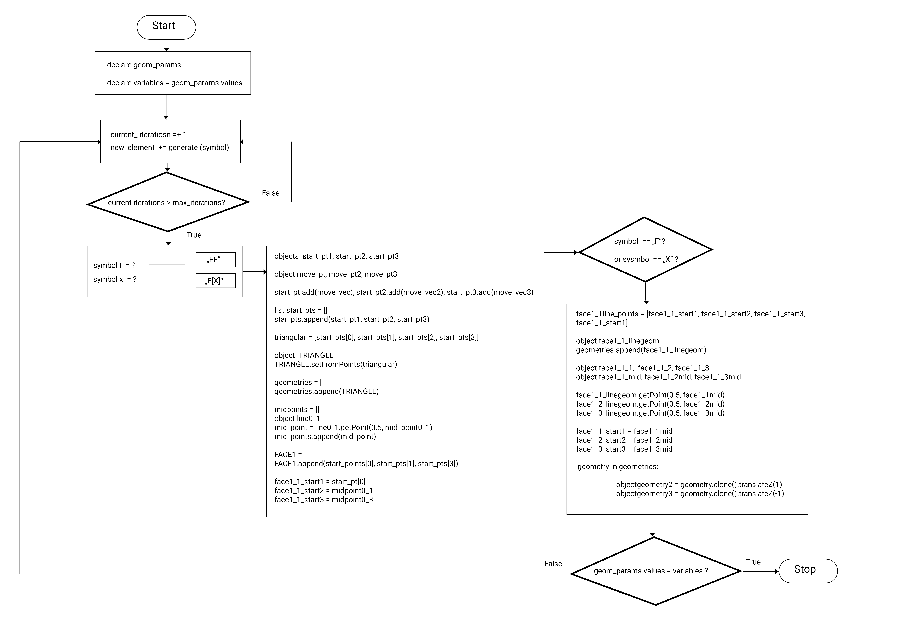
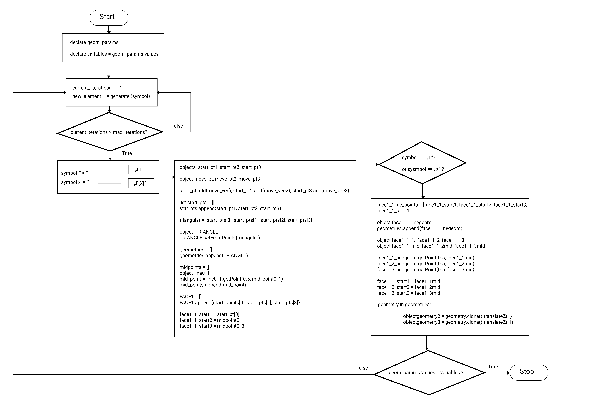

triangles
This design tries to show the potential of principles of fractal geometries for architectual applications. The triangular sructure divides itself per iteration in further triangular structures. To make the app become more interactive and changeable for the app user, two sliders are implemented. The first one allows to change the number of max_iterations for the recursive function of the code and the second let the user change the position of a vertex on every line, that becomes the start point of the next triangle division.
In technical terms, the code is structured in three definitions. The definition of the system (the recursive function), the draw_system definition, where the geometry is generated and the defintion of symbols, which seperates the different steps of the draw_system function. The iteration repeats as long as the maximum number is not reached. A final update function cleans the scene, when the sliders and the existing variables of the scene are not equal and restarts the geometry generation.
 
